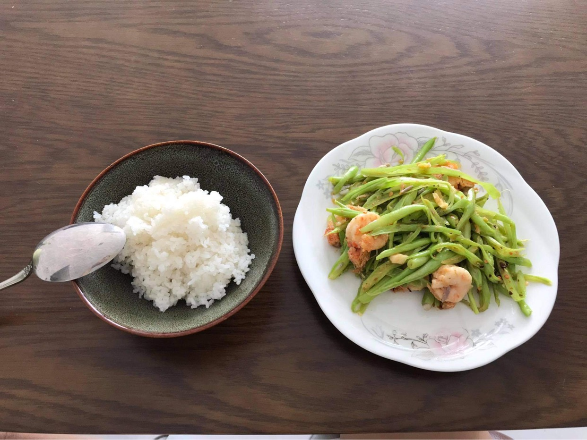
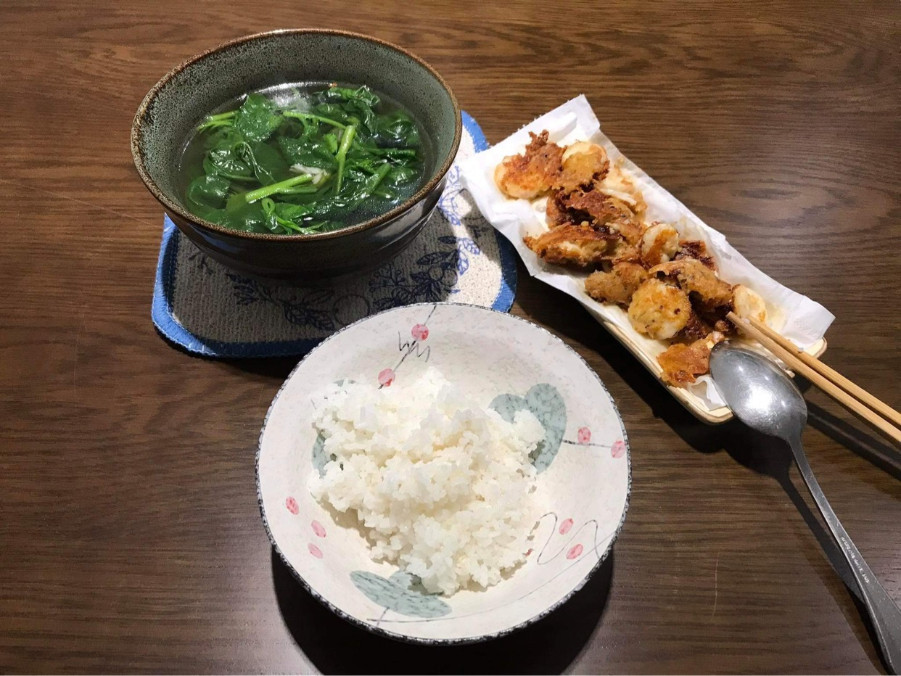
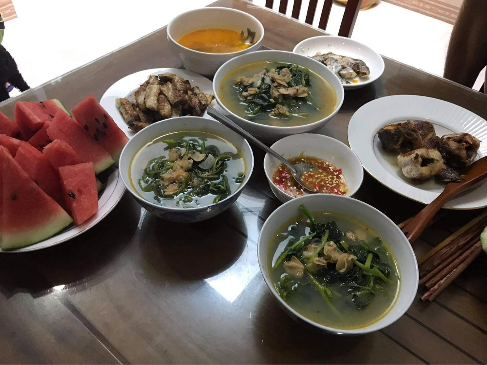

<!DOCTYPE html>
<html style="font-size: 16px;">
  <head>
    <meta name="viewport" content="width=device-width, initial-scale=1.0">
    <meta charset="utf-8">
    <meta name="keywords" content="">
    <meta name="description" content="">
    <meta name="page_type" content="np-template-header-footer-from-plugin">
    <title>ABOUT ME</title>
    <link rel="stylesheet" href="nicepage.css" media="screen">
<link rel="stylesheet" href="ABOUT-ME.css" media="screen">
    <script class="u-script" type="text/javascript" src="jquery.js" defer=""></script>
    <script class="u-script" type="text/javascript" src="nicepage.js" defer=""></script>
    <meta name="generator" content="Nicepage 3.3.7, nicepage.com">
    <link id="u-theme-google-font" rel="stylesheet" href="https://fonts.googleapis.com/css?family=Roboto:100,100i,300,300i,400,400i,500,500i,700,700i,900,900i|Open+Sans:300,300i,400,400i,600,600i,700,700i,800,800i">
    
    
    
    <script type="application/ld+json">{
		"@context": "http://schema.org",
		"@type": "Organization",
		"name": "",
		"url": "index.html",
		"logo": "images/6fd89358657665.5a044d788945d.jpg"
}</script>
    <meta property="og:title" content="ABOUT ME">
    <meta property="og:type" content="website">
    <meta name="theme-color" content="#478ac9">
    <link rel="canonical" href="index.html">
    <meta property="og:url" content="index.html">
  </head>
  <body class="u-body"><header class="u-clearfix u-header u-header" id="sec-3ff4"><div class="u-clearfix u-sheet u-sheet-1">
        <a href="HOME.html" data-page-id="2893715605" class="u-image u-logo u-image-1" title="HOME">
          
        </a>
        <nav class="u-menu u-menu-dropdown u-offcanvas u-menu-1">
          <div class="menu-collapse" style="font-size: 1.25rem; letter-spacing: 0px; font-weight: 700; text-transform: uppercase;">
            <a class="u-border-2 u-border-active-palette-1-base u-border-hover-palette-1-base u-border-no-left u-border-no-right u-border-no-top u-button-style u-custom-left-right-menu-spacing u-custom-padding-bottom u-custom-top-bottom-menu-spacing u-nav-link u-text-active-palette-1-base u-text-grey-90 u-text-hover-grey-90" href="#">
              <svg><use xmlns:xlink="http://www.w3.org/1999/xlink" xlink:href="#menu-hamburger"></use></svg>
              <svg version="1.1" xmlns="http://www.w3.org/2000/svg" xmlns:xlink="http://www.w3.org/1999/xlink"><defs><symbol id="menu-hamburger" viewBox="0 0 16 16" style="width: 16px; height: 16px;"><rect y="1" width="16" height="2"></rect><rect y="7" width="16" height="2"></rect><rect y="13" width="16" height="2"></rect>
</symbol>
</defs></svg>
            </a>
          </div>
          <div class="u-custom-menu u-nav-container">
            <ul class="u-nav u-spacing-30 u-unstyled u-nav-1"><li class="u-nav-item"><a class="u-border-2 u-border-active-palette-1-base u-border-hover-palette-1-base u-border-no-left u-border-no-right u-border-no-top u-button-style u-nav-link u-text-active-palette-1-base u-text-grey-90 u-text-hover-grey-90" href="HOME.html" style="padding: 10px 0px;">HOME</a>
</li><li class="u-nav-item"><a class="u-border-2 u-border-active-palette-1-base u-border-hover-palette-1-base u-border-no-left u-border-no-right u-border-no-top u-button-style u-nav-link u-text-active-palette-1-base u-text-grey-90 u-text-hover-grey-90" href="ABOUT-ME.html" style="padding: 10px 0px;">ABOUT ME</a>
</li><li class="u-nav-item"><a class="u-border-2 u-border-active-palette-1-base u-border-hover-palette-1-base u-border-no-left u-border-no-right u-border-no-top u-button-style u-nav-link u-text-active-palette-1-base u-text-grey-90 u-text-hover-grey-90" href="BLOG.html" style="padding: 10px 0px;">BLOG</a>
</li><li class="u-nav-item"><a class="u-border-2 u-border-active-palette-1-base u-border-hover-palette-1-base u-border-no-left u-border-no-right u-border-no-top u-button-style u-nav-link u-text-active-palette-1-base u-text-grey-90 u-text-hover-grey-90" href="MAGAZINE.html" style="padding: 10px 0px;">MAGAZINE</a>
</li><li class="u-nav-item"><a class="u-border-2 u-border-active-palette-1-base u-border-hover-palette-1-base u-border-no-left u-border-no-right u-border-no-top u-button-style u-nav-link u-text-active-palette-1-base u-text-grey-90 u-text-hover-grey-90" href="PODCAST.html" style="padding: 10px 0px;">PODCAST</a>
</li></ul>
          </div>
          <div class="u-custom-menu u-nav-container-collapse">
            <div class="u-black u-container-style u-inner-container-layout u-opacity u-opacity-95 u-sidenav">
              <div class="u-sidenav-overflow">
                <div class="u-menu-close"></div>
                <ul class="u-align-center u-nav u-popupmenu-items u-unstyled u-nav-2"><li class="u-nav-item"><a class="u-button-style u-nav-link" href="HOME.html" style="padding: 10px 0px;">HOME</a>
</li><li class="u-nav-item"><a class="u-button-style u-nav-link" href="ABOUT-ME.html" style="padding: 10px 0px;">ABOUT ME</a>
</li><li class="u-nav-item"><a class="u-button-style u-nav-link" href="BLOG.html" style="padding: 10px 0px;">BLOG</a>
</li><li class="u-nav-item"><a class="u-button-style u-nav-link" href="MAGAZINE.html" style="padding: 10px 0px;">MAGAZINE</a>
</li><li class="u-nav-item"><a class="u-button-style u-nav-link" href="PODCAST.html" style="padding: 10px 0px;">PODCAST</a>
</li></ul>
              </div>
            </div>
            <div class="u-black u-menu-overlay u-opacity u-opacity-70"></div>
          </div>
        </nav>
      </div></header>
    <section class="u-clearfix u-gradient u-section-1" id="sec-7206">
      <div class="u-clearfix u-sheet u-sheet-1">
        <h3 class="u-text u-text-body-alt-color u-text-1">ABOUT ME</h3>
        
        <p class="u-text u-text-2">My name is Le Nguyen Chau Anh. Welcome to the About me page!<br>
          <br>I am 18 years old. My hometown is Hue City an now I move to Ho Chi Minh city to study and work in the future. For the first time here, I am feeling nervous about living alone in a big city. However, after 3 months, I gradually get used to the busy living here. Now, I study in RMIT- an international university having a wonderful education. This is an opportunity for me to experience new nad exciting things in each of this university. Visit my website where I can share about my daily life, share my stories, and hobbies.
        </p>
        <p class="u-text u-text-3"><b>
            <span style="font-weight: 400;">About my study, I am a freshman of Professional communication major student at RMIT Vietnam, a famous school in Vietnam. At first, my friends around me advised me to re-choose the industry because Profcom is so difficult, but I still keep my passion to pursue this subject to the end. And I was right. Although the real lessons were difficult, it was very rewarding and especially made the learning media feel energetic and happy.</span>
            <br>
            <br>
            <span style="font-weight: 400;">When I have free time, I usually listen to music. I do not matter which music is because if I only perceive music by melody as essential, songs that match my mood or make me more energetic and cheerful.</span>
            <br>
            <br>
            <span style="font-weight: 400;">I also tinkered on how to cook. I love to cook from a young age while watching my mother cook in the kitchen. I'm not good at cooking, but I really want to make something for the people around me to be happier with. A memorable memory is that I personally cook a meal for both my family and grandparents. Seeing everyone eat well, I feel very happy for helping everyone regain their energy. Knowing a little about cooking also helped me a lot when I came to live in Saigon.</span>
            <br>
            <br>
            <span style="font-weight: 400;">On my website, I upload the works that my friend and I have produced. I hope you will enjoy your visit to my website. Wish you a good day!!.</span>
            <br></b>
        </p>
      </div>
    </section>
    <section class="u-clearfix u-gradient u-section-2" id="sec-1526">
      <div class="u-clearfix u-sheet u-valign-middle u-sheet-1">
        
        
        <p class="u-align-center u-text u-text-custom-color-10 u-text-1">&nbsp; &nbsp;Meals made by me&nbsp;</p>
        
        <p class="u-align-center u-text u-text-custom-color-10 u-text-2">A lunch I prepare for my family</p>
      </div>
    </section>
    
    
    <footer class="u-align-center u-clearfix u-footer u-grey-80 u-footer" id="sec-d62a"><div class="u-clearfix u-sheet u-valign-middle u-sheet-1">
        <h3 class="u-text u-text-1">
          <a class="u-active-none u-border-none u-btn u-button-link u-button-style u-hover-none u-none u-text-white u-btn-1" href="https://templated.co/2" target="_blank">CREATED WITH TE<span style="font-weight: 700;"> M</span>PLATED.CO
          </a>
        </h3>
      </div></footer>
    <section class="u-backlink u-clearfix u-grey-80">
      <a class="u-link" href="https://nicepage.com/templates" target="_blank">
        <span>Free Template</span>
      </a>
      <p class="u-text">
        <span>created with</span>
      </p>
      <a class="u-link" href="https://nicepage.com/html-website-builder" target="_blank">
        <span>HTML Website Builder</span>
      </a>. 
    </section>
  </body>
</html>